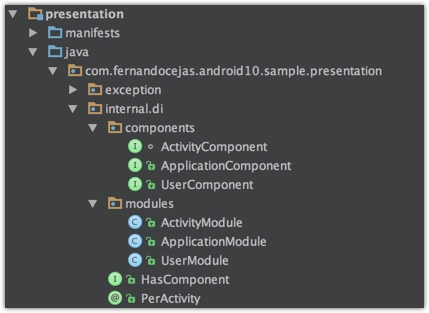

为了更好的解耦。clean 架构 使用了 Daager2 进行依赖注入。将接口放在了 domain 层。而将具体实现放在了 data 和 Presentation 层。
项目分析

依赖注入的逻辑主要放在了 presentation 层的 di 包中。
- component：连接 module 和需要被注入的实例
- modules：提供实体的构造方法
- PerActivity：注解
- HasComponet：
ApplicationModule
/**
* Dagger module that provides objects which will live during the application lifecycle.
*/
@Module
public class ApplicationModule {
private final AndroidApplication application;
public ApplicationModule(AndroidApplication application) {
this.application = application;
}
@Provides @Singleton Context provideApplicationContext() {
return this.application;
}
@Provides @Singleton ThreadExecutor provideThreadExecutor(JobExecutor jobExecutor) {
return jobExecutor;
}
@Provides @Singleton PostExecutionThread providePostExecutionThread(UIThread uiThread) {
return uiThread;
}
@Provides @Singleton UserCache provideUserCache(UserCacheImpl userCache) {
return userCache;
}
@Provides @Singleton UserRepository provideUserRepository(UserDataRepository userDataRepository) {
return userDataRepository;
}
}
放在 ApplicationModule 中的 @provides 方法，都加以 @Singleton 修饰，表示在整个 app 生命周期内都是唯一的。
这几个 Provides 方法都是将参数直接返回。真正的构造发生在类的定义中，举个栗子
@Provides @Singleton UserRepository provideUserRepository(UserDataRepository userDataRepository) {
return userDataRepository;
}
/**
* Decorated {@link java.util.concurrent.ThreadPoolExecutor}
*/
@Singleton
public class JobExecutor implements ThreadExecutor {
private final ThreadPoolExecutor threadPoolExecutor;
@Inject
JobExecutor() {
this.threadPoolExecutor = new ThreadPoolExecutor(3, 5, 10, TimeUnit.SECONDS,
new LinkedBlockingQueue<>(), new JobThreadFactory());
}
}
}
在类的构造方法前加以 @Inject 修饰，这样Daager在需要注入JobExecutor 时就直接使用此构造方法了。
Container中的@Inject的规则
- @Inject可以标记Container中的成员变量，但是这些成员变量要求是包级可见，也就是说@Inject不可以标记private类型的成员变量。
- 当@Inject标记成员变量时，查找对应依赖按照以下规则
- 该成员变量的依赖会从Module的@Provides方法集合中查找；
- 如果查找不到，则查找成员变量类型是否有@Inject构造方法，并注入构造方法且递归注入该类型的成员变量
ActivityModule
提供了当前的 Activity
/**
* A module to wrap the Activity state and expose it to the graph.
*/
@Module
public class ActivityModule {
private final Activity activity;
public ActivityModule(Activity activity) {
this.activity = activity;
}
/**
* Expose the activity to dependents in the graph.
*/
@Provides @PerActivity Activity activity() {
return this.activity;
}
}
UserModule
/**
* Dagger module that provides user related collaborators.
*/
@Module
public class UserModule {
public UserModule() {}
}
user 相关的构造方法可以放在这里。
ApplicationComponent
/**
* A component whose lifetime is the life of the application.
*/
@Singleton // Constraints this component to one-per-application or unscoped bindings.
@Component(modules = ApplicationModule.class)
public interface ApplicationComponent {
void inject(BaseActivity baseActivity);
//Exposed to sub-graphs.
Context context();
ThreadExecutor threadExecutor();
PostExecutionThread postExecutionThread();
UserRepository userRepository();
}
将ApplicationMoudle 中的构造方法暴露出来。供下面依赖的模块使用。
这里的inject() 是为了给BaseActivity 中的Navigator 使用。Navigator 使用了 context
public abstract class BaseActivity extends Activity {
@Inject Navigator navigator;
@Override
protected void onCreate(Bundle savedInstanceState) {
super.onCreate(savedInstanceState);
this.getApplicationComponent().inject(this);
}
ActivityComponent
/**
* A base component upon which fragment's components may depend.
* Activity-level components should extend this component.
*
* Subtypes of ActivityComponent should be decorated with annotation:
* {@link com.fernandocejas.android10.sample.presentation.internal.di.PerActivity}
*/
@PerActivity
@Component(dependencies = ApplicationComponent.class, modules = ActivityModule.class)
interface ActivityComponent {
//Exposed to sub-graphs.
Activity activity();
}
- fragment 级别的 components要依赖这个components
- Activity级别的components 需要继承这个component
- @PerActivity 修饰
将ActivityModule其中的的 Activity 构造方法暴露出来
UserComponent
/**
* A scope {@link com.fernandocejas.android10.sample.presentation.internal.di.PerActivity} component.
* Injects user specific Fragments.
*/
@PerActivity
@Component(dependencies = ApplicationComponent.class, modules = {ActivityModule.class, UserModule.class})
public interface UserComponent extends ActivityComponent {
void inject(UserListFragment userListFragment);
void inject(UserDetailsFragment userDetailsFragment);
}
在 fragment 中注入
public class UserListFragment extends BaseFragment implements UserListView {
@Inject UserListPresenter userListPresenter;
@Inject UsersAdapter usersAdapter;
@Override public void onCreate(Bundle savedInstanceState) {
super.onCreate(savedInstanceState);
this.getComponent(UserComponent.class).inject(this);
}
...
UserListPresenter UsersAdapter 中的构造方法都有
@Inject修饰。而他们构造参数的依赖 UserComponent都提供了
注 这里的
getConpnent()是BaseFragment的方法，这里写的有点绕。分析下
/**
* Gets a component for dependency injection by its type.
*/
@SuppressWarnings("unchecked")
protected <C> C getComponent(Class<C> componentType) {
return componentType.cast(((HasComponent<C>) getActivity()).getComponent());
为了得到不同类型的Component这里使用了泛型。将泛型的 class 作为参数
getActivity()得到当前的Activity- 而当前的
Activity是实现了HasComponent<C>接口的。所以强制转型为HasComponent<C>
看看如何实现接口的
private void initializeInjector() {
this.userComponent = DaggerUserComponent.builder()
.applicationComponent(getApplicationComponent())
.activityModule(getActivityModule())
.build();
}
@Override public UserComponent getComponent() {
return userComponent;
}
在 Activity 的 builder 构造了UserComponent 的一些 dependence。最后构造出UserComponent，并在接口中返回
- 调用 Activity 的这个接口
- 这个返回的 component 用 class的
cast()方法强制转型为需要的类型
源码分析
dagger2 会通过定义的Component接口生成对应的类
例如ApplicationComponent -> DaggerApplicationComponent
首先找到 inject 入口
@Override
public void inject(BaseActivity baseActivity) {
//jnject 入口
baseActivityMembersInjector.injectMembers(baseActivity);
}
定义为
private MembersInjector<BaseActivity> baseActivityMembersInjector;
初始化的地方为
@SuppressWarnings("unchecked")
private void initialize(final Builder builder) {
//这个是初始化函数，在构造方法里面调用
this.navigatorProvider = DoubleCheck.provider(Navigator_Factory.create());
this.baseActivityMembersInjector = BaseActivity_MembersInjector.create(navigatorProvider);
...
}
因为在 inject 的 BaseActivity 中 ,只需要依赖注入 Navigator一个类。所以 this.baseActivityMembersInjector 在 create 的时候只需要navigatorProvider，若注入需要其他的 provider 或者 module 都可以依次添加 ，例如
this.userCacheImplProvider =
DoubleCheck.provider(
UserCacheImpl_Factory.create(
provideApplicationContextProvider,
serializerProvider,
fileManagerProvider,
provideThreadExecutorProvider));
this.provideUserCacheProvider =
DoubleCheck.provider(
ApplicationModule_ProvideUserCacheFactory.create(
builder.applicationModule, userCacheImplProvider));
而每个 provider 都是有对应生成的xxxx_Factory. 生成
this.navigatorProvider = DoubleCheck.provider(Navigator_Factory.create());
@Generated(
value = "dagger.internal.codegen.ComponentProcessor",
comments = "https://google.github.io/dagger"
)
public final class Navigator_Factory implements Factory<Navigator> {
private static final Navigator_Factory INSTANCE = new Navigator_Factory();
@Override
public Navigator get() {
return new Navigator();
}
public static Factory<Navigator> create() {
return INSTANCE;
}
}
依赖的 module 通过 建造者模式获取到
public static final class Builder {
private ApplicationModule applicationModule;
private Builder() {}
public ApplicationComponent build() {
if (applicationModule == null) {
throw new IllegalStateException(
ApplicationModule.class.getCanonicalName() + " must be set");
}
return new DaggerApplicationComponent(this);
}
public Builder applicationModule(ApplicationModule applicationModule) {
this.applicationModule = Preconditions.checkNotNull(applicationModule);
return this;
}
}